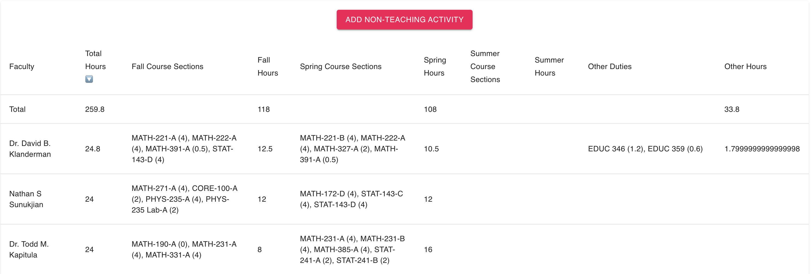
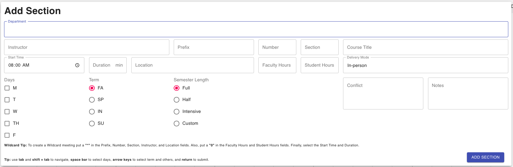
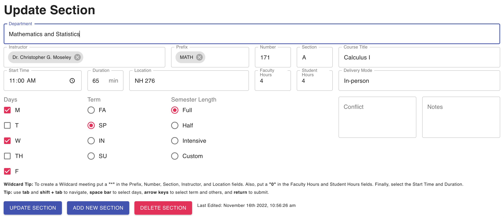

Using Course Schedulizer
To Create a Class Schedule for a Department
Two Approaches
Import or Start from Scratch?
There are two ways to create a schedule for a new academic year:
- Start from a past schedule and modify it, or
- Build the schedule from scratch in the Course Schedulizer.
In most years, option 1 saves a lot of time. This year it will save less (because of the 2/4 transition), but for some departments, it may still be easier to start with a past year’s schedule, even though you will need to adjust all the times and perhaps the number of hours for each section.
Getting A Previous Schedule
You can download a previous schedule from https://reports.calvin.edu/Reports/report/Departmental%20Reports/Course%20Section%20Report. Fill in the desired terms and department, view the report, and then download it as a CSV.
The file will be called something like Course Section Report.csv and will probably be in the default location where your browser uses for downloads.
Getting Started with Course Schedulizer
Launching Course Schedulizer
Navigate in a browser to https://senior-knights.github.io/course-schedulizer/#/
The first time you do this, you will see
You can view the demo or explore the help if you like, but eventually you will be ready to press either
- Import Schedule (if you just downloaded a schedule to start from), or
- Add Section (if you are building from scratch).
Importing a Previous Schedule
If you have a saved schedule (either one you exported from reports.calvin.edu or one that you previously saved in Course Schedulizer), you can import it by clicking the button and navigating to the file on your computer.
Inspecting Your Schedule
Once a schedule is loaded, you can inspect the schedule in one of several views by selecting the tab you are interested in. Here is the Room Schedule view, colored by instructor:
You can may need to zoom in or out or scroll to get a good view.
Conflicts
Notice that a few classes are outlined in red. These are beging flagged as conflicts. You can see all your conflicts in the Conflicts view:
Note: At the time of this writing, first-half, second-half classes register as a conflict. We hope to get this fixed soon.
Facutly Load Tallies
The Teaching Loads view tallies up teaching loads from the courses. You can also add non-teaching load for things like CRFs, administrative duties, etc.

Exporting your schedule
While your browser will probably cache your work, it is a good idea to save your progress. The menu in the upper left corner gives you this option:
Choose Export CSV, and your schedule will be saved to your computer. The file name will include a time stamp so you can tell when it was generated.
Hand editing your schdedule (Use with caution!)
It is possible to edit this file by hand (in Excel, for example). But you need to be careful not to corrupt the format of the file. The file contains some redundant information, some of which is ignored when you import the schedule.
Advice: Save your schedule with a new name before editing so that if something goes wrong, you can always revert to your previously saved version.
Here are some reasonable things to do by hand that may save you some time. (All of these can also be done inside Course Schedulizer.) The are ordered roughly from most useful/reasonable to least.
Edit the
MeetingDurationMinutescolumn.Most of our courses will be changing to a different duration. You could change all of the 50-minute classes to 65 or 100, for example. This may be faster to do in Excel than by clicking on each section in Course Schedulizer.
Edit the
AcademicYearcolumn.Change this to 2024 for the 23-24 academic year.
Edit the
MinimumCredits(Student load hours) andFacultyLoad(faculty load hours) columns.You may be making many systematic changes to these this year.
You could edit
MeetingStartInternal, but be sure it contains a legal time value.Nearly all start times will be changing this year. Course Schedulizer things of course times as a start and a duration. (This makes it easier to move classes to different times, since you usually only have to edit one field rather than two and you don’t have to do the arithmetic to get the end time correct.) If you prefer to move courses to their new start times in Excel, you could do that. Our you could wait and do it in Course Schedulizer, where you can visualize the changes as you make them.
Things like
ShortTitleandFacultycould be edited here as well, if you like.Note: Be sure each faculty person’s name is listed exactly one way for all their courses or they will appear as two different faculty members in the displays.
Once you have made your edits, you can upload the edited file and resume working in Course Schedulizer.
Adding and Modifying Sections
At this point you either have a draft schedule (likely with many edits to make) or an empty schedule waiting for some sections to be added.
The Add a Section button on the initial screen or the + off to the right in the gray bar can be used to bring up the menu for adding a section.

Just fill in the information and click Add Section.
Note: If you choose a half-semester course, you will be prompted to indicate whether it is a first half or second half course. A similar things happens for the intensive classes.
Some information (like Global Max, etc.) can be left blank and filled in later (or not at all). To edit a section, just click on that section in one of the views to bring up the section editor and make your modifications. You can use those modifications to update the existing section or to create a new section.
In particular, if you have a number of similar sections to add, you can create one and then use it as a template for creating the others. This save a lot of time. Just use Add New Section button instead of the Update Section button.

Notes
You can add text notes to sections. While you are developing your schedule, these can be used to remind yourself of why you have done certain things, things that still need attention, etc. These notes will also be communicated to the registrar’s office, so you can use them to communicate important information to that office as well.
Future Development
Course Schedulizer is being expanded and improved by some senior computer science students. If notice bugs or have suggestions for improvement, please let us know.